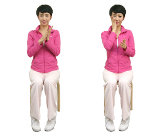

이명에 좋은 지압

손바닥을 비벼 얼굴 마사지 하기
두 손을 뜨겁게 비벼준 뒤 세수하듯이 얼굴을 골고루 마사지 해주는 것입니다.
이 손바닥의 열이 식을때까지 얼굴을 마사지를 해준 뒤 다시 손바닥을 비벼서 열을 내어 마사지를 하면됩니다.
이 동작을 3~4회 반복해서 진행합니다.
귀 전체를 눌러주기
시 두번째는 엄지와 검지로 귀 전체를 골고루 꼭꼭 눌러주듯이 마사지를 해 주는 것 입니다.
이어 귀를 좌로 또는 우로 또는 아래로 위로 잡아당기듯이 했다가 놨다가를 반복하면 됩니다.
이어 손바닥으로 귀 전체를 아래위로 문질러 주는 것을 반복합니다.